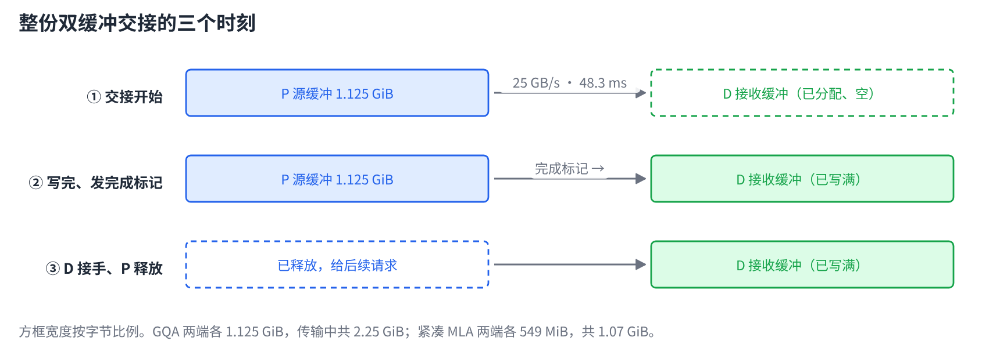
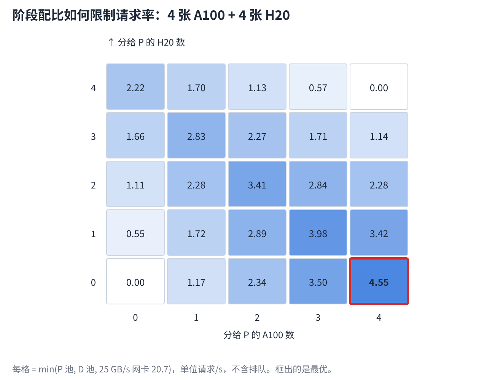
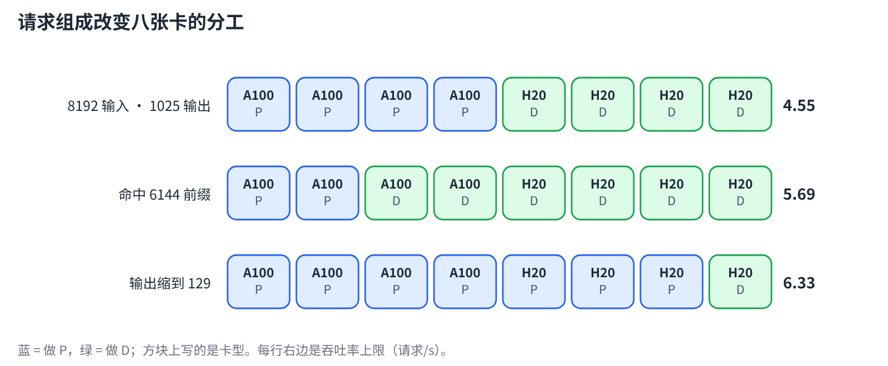
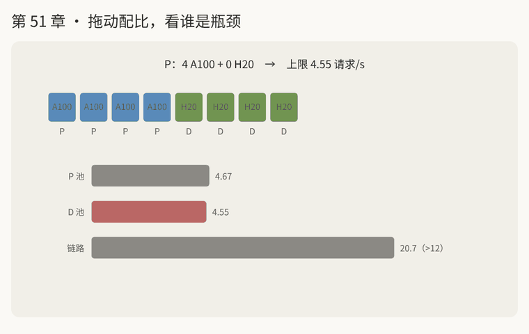

第 51 章 · Prefill–Decode 分离与资源配比：A100 做输入，H20 做生成
本地运行
git clone https://github.com/wikieden/ai-infra-from-constraints
cd ai-infra-from-constraints/code/notebooks
pip install jupyterlab torch numpy
jupyter lab ch51_pd_split.ipynb也可以下载后直接用 VS Code 打开 .ipynb 运行。需要 GPU 的章节在 Colab 里选「代码执行程序 → 更改运行时类型 → GPU」。
本章回答：P 交给 D 的上下文 KV 有多大、传多久？两种卡的 prefill、decode 能力怎么从数据表推出来？八张同型 A100 分离后为什么反而少 7% 吞吐？四张 A100 做 P、四张 H20 做 D 为什么能从 3.02 升到 4.55 请求/s？前缀命中、输出变短时，配比怎么跟着变？
讲解日期：2026-11-24 · 上一章：第 50 章 计算与状态的分布方式 · 下一章：第 52 章 Attention–FFN 分离与异构执行
对应原文：materials/ai-infra-book/manuscripts/09-分布式推理.md§9.2 L86–L229（例 9.1、9.2，图 9-6 至 9-11）
本章缩写：GQA = Grouped-Query Attention（分组 / 查询 / 注意力）· MLA = Multi-head Latent Attention（多头 / 潜变量 / 注意力）· RDMA = Remote Direct Memory Access（远程 / 直接 / 内存访问）· GbE = Gigabit Ethernet（千兆位 / 以太网）· MFU = Model FLOPs Utilization（模型 / 浮点运算 / 利用率）· MBU = Model Bandwidth Utilization（模型 / 带宽 / 利用率）。全部缩写见 缩写与术语表
讲解
第一步：交接什么、多大、多久（2026-11-24）
类比：交接班。 一个人读完材料，交给另一个人往下写。接手的人需要前一个人的笔记，否则只能从头再读一遍。P 和 D 各自都跑完整的前向，所以两边都要整份权重；要交接的"笔记"是上下文 KV。
原文 L88–L119：
例 9.1：两台服务器之间 25 GB/s，\(T = 1.125 \times 2^{30} / 25\text{e}9 \approx 48.3\) ms，加 5 μs 启动还是 48.3 ms。大块交接看带宽，启动可以忽略（AF 的小块交接正好相反，第 52 章）。
MLA 只存上投影之前的潜变量（第 09 章），\(V = nL(d_c + d_r)b\)：
| 交接状态 | 每 token | 8192 token | 25 GB/s | 50 GB/s |
|---|---|---|---|---|
| Qwen3-8B，BF16 GQA | 144 KiB | 1.125 GiB | 48.3 ms | 24.2 ms |
| DeepSeek-V3，BF16 紧凑 MLA | 68.6 KiB | 549 MiB | 23.0 ms | 11.5 ms |

图 51-1 · 先写完、再发完成标记、D 看到标记才读；交出执行权之后 P 才释放。传输中两端共占 2.25 GiB。
- 分块传输时，目的端确认收到一块，源端就能先放这一块，缩短重复驻留。
- 持续到达时，链路既限"每秒交接几份"，也限"每份多久"：每秒 8 份要 9.7 GB/s，16 份要 19.3 GB/s。100 GbE（12.5 GB/s）够前者的平均，后者每秒积 6.8 GB 待传数据；即使两池都有空算力，网络队列也一直长。
一句话：交接的是上下文 KV，大小 \(2nLh_{kv}d_hb\)；传输时两端都占着。
第二步：从数据表推阶段能力（2026-11-24）
类比：卡车与轿车。 拉一车砖（prefill，计算多、读一次权重）看发动机；来回送快递（decode，每步重读权重和 KV）看路宽。
原文 L152–L173：Roofline 取计算与访存中较大的；效率都取峰值的 50%（第 49 章 实测：decode MBU 在 batch 32 约 49%，prefill MFU 58%–62%）。
| 卡 | BF16 稠密 | 显存带宽 | 50% 后 |
|---|---|---|---|
| A100 80GB SXM | 312 TFLOP/s | 2039 GB/s | 156 TFLOP/s、1020 GB/s |
| H20 SXM5 96GB | 148 TFLOP/s | 4096 GB/s | 74 TFLOP/s、2048 GB/s |
- prefill：8192 token 133.6 TFLOPs，只读一次约 15 GB 权重 → 计算受限。A100 \(133.6/156 = 0.856\) s，H20 1.81 s。
- decode：batch 32 一步，平均上下文 \(8192 + 512 = 8704\)：读 15.1 GB 权重 + 41.1 GB KV，矩阵只有 0.65 TFLOPs → 带宽受限。A100 一步 55.1 ms（每秒约 580 次），H20 27.4 ms（1166 次）。
- 每请求 D 的 GPU 秒 = \(1024 \times\) 一步时间 ÷ 32：A100 1.764，H20 0.878。
batch 32 生成到最后 KV 共 43.5 GB，加权重约 59.9 GB，两种卡都放得下。
一句话：prefill 看算力、decode 看带宽；H20 算力不到 A100 一半、带宽却翻倍，所以 H20 适合 D。
第三步：同构分离不涨吞吐，换来稳定（2026-11-24）
类比：同一批厨师分成"切配组"和"炒菜组"。 总工时没变，人只能按整数分，一边总有人闲着；好处是炒菜的节奏不再被大单打断。
原文 L175–L179：八张 A100：
- 共置：每请求 \(0.856 + 1.764 = 2.62\) GPU 秒，合计 3.05 请求/s。
- 分离：3 张做 P 提供 3.50，5 张做 D 提供 2.83，上限 2.83，低 7%。每请求的 GPU 秒没变，整数划分让一边闲置。
- 换来的是延迟：共置不分块时，一次 8K prefill 独占 0.86 s，相当于在途请求错过约 16 个 55 ms 的 decode 步；分离后 D 每步稳在 55 ms。
分块捎带是另一条路：A100 一步 decode 访存 55.1 ms、计算只要 4.2 ms，空闲算力够做约 490 个 prefill token。8192 分 17 块捎带，首 token 约 0.94 s，和分离差不多，在途请求的输出间隔不变；若完全藏住，八卡共置上限升到约 4.5 请求/s。同构集群先用分块，分离的价值在于两阶段各选并行方式和 batch，彻底隔开排队。
一句话：同型卡上分离不省 GPU 秒，只换隔离；先试分块捎带。
第四步：异构配比 4.55 请求/s（2026-11-24）
类比：让会开车的开车，会搬货的搬货。
原文 L181–L212，例 9.2：
| 卡 | P 能力（新 token/s） | D 能力（调用/s） | 每请求 P GPU 秒 | 每请求 D GPU 秒 |
|---|---|---|---|---|
| A100 | 9566 | 580 | 0.856 | 1.764 |
| H20 | 4538 | 1166 | 1.805 | 0.878 |

图 51-2 · 每格取两池能力与 25 GB/s 网卡交接能力的最小值；框出的是最优。
- 是共置 3.02 的 1.51 倍，高于到达的 3.5。模型做的工作一样多，只是换了人做。
- 角色对调（H20 做 P）：P 池只剩 2.22，不到一半。
- 偏离最优：一张 A100 调到 D → P 降到 3.50；一张 H20 调到 P → D 降到 3.42。一个池有富余，帮不了另一个池。
- 分块捎带在 H20 上不灵：一步空闲算力只够约 85 个 prefill token，八卡理想捎带共置约 4.17，仍低于 4.55。异构的收益来自硬件差异，分块替代不了。
- 状态换成 MLA：链路项从 20.7 升到 43.4，上限还是 D 池的 4.55。链路成为约束的条件是 \(B_{\mathrm{net}} < \mu V_{KV}\)：GQA 要 5.5 GB/s，MLA 只要 2.6 GB/s。MLA 多出的查询侧变换每请求每步 27.7 μs，若藏不住 D 池降到约 4.41，仍够。
场景代码：vLLM 用 KV connector 把 P、D 两个实例接起来（真实 API；connector 名随版本变化）：
# P 实例（A100 服务器）
vllm serve Qwen/Qwen3-8B --port 8100 \
--kv-transfer-config '{"kv_connector":"NixlConnector","kv_role":"kv_both"}'
# D 实例（H20 服务器），再由一个代理先把请求发给 P、拿到 KV 句柄后转给 D
vllm serve Qwen/Qwen3-8B --port 8200 \
--kv-transfer-config '{"kv_connector":"NixlConnector","kv_role":"kv_both"}'
一句话：异构 PD 的上限是 P 池、D 池、交接链路三者最小；最优配比让两池接近相等。
第五步：请求一变，配比就变（2026-11-24）
类比：店里来的客人从"大单少"变成"小单多"，前台和后厨的人数要重新排。
原文 L214–L228：
| 请求 | 变化 | 最优分工 | 上限（请求/s） |
|---|---|---|---|
| 8192 输入、1025 输出 | — | 4 A100 做 P；4 H20 做 D | 4.55 |
| 前缀命中 6144，只算 2048 | A100 prefill 0.856 → 0.238 s | 2 A100 做 P；2 A100 + 4 H20 做 D | 5.69 |
| 输出缩到 129 | D 调用 1024 → 128，H20 D 能力 9.46/卡 | 4 A100 + 3 H20 做 P；1 H20 做 D | 6.33（共置 5.84，只多 8.5%） |

图 51-3 · 每个方块是原来的一张卡，只改它承担的阶段。前缀命中让出两张 A100 给 D，输出变短把三张 H20 推给 P。
- 前缀命中时 D 没缓存，交接的还是整份 1.125 GiB：P 少做七成，传给 D 的字节一点没少。
- 输出越长，D 比重越大，带宽强、算力弱的卡越值钱。
- 调度分两个时间尺度：请求到达时选队列（眼前等待），负载分布变化时调池规模（积压能否消退）。
一句话：前缀命中把资源推向 D，输出变短把资源推向 P。
动画演示：拖动配比看谁是瓶颈

可交互版：animations/51-pd-split.html（滑块：P 用几张 A100、几张 H20；链路带宽 1–50 GB/s；状态 GQA / MLA）。
怎么看：
- 左边八个方块是八张卡，蓝色做 P、绿色做 D（第四步）；
- 右边三根横条：P 池、D 池、链路能力，最短的那根标红就是上限；
- 播放：4 A100 做 P（4.55）→ 角色对调（2.22）→ 调一张 A100 到 D（3.50）→ 链路降到 4 GB/s（链路成瓶颈）→ 换 MLA。
练习与作答记录
题 1（第一步）：一个模型 48 层、8 个 KV 头、头维 128、BF16，32K 上下文。KV 多大？经 50 GB/s 交接多久？双缓冲时两端共占多少？
作答记录：（待作答）
题 2（第四步）：沿用例 9.2 的能力表，如果只有 3 张 A100 和 5 张 H20，最好怎么分？上限多少？
作答记录：（待作答）
题 3（第五步）：输入 8192、输出 2049（D 调用 2048 次，平均上下文按 9216 算）。H20 每请求 D 的 GPU 秒大约多少？四张 H20 做 D 还够不够 3.5 请求/s？
作答记录：（待作答）
口诀
交接班只交笔记，笔记大小 2nLhdb，传的时候两边都留着；
拉砖看发动机，送快递看路宽；
同一批厨师分组不省工时，先试顺手捎带；
会开车的开车、会搬货的搬货，两边一样快才不浪费；客人一变就重排。
本章复习卡片
I174（V_KV = 2nLh_kv d_h b；1.125 GiB 48.3 ms、MLA 549 MiB 23.0 ms；双缓冲三个时刻）、I175（从峰值 50% 推阶段能力：0.856 / 1.764 与 1.805 / 0.878；同构分离 2.83 < 3.05；异构 min(4.67, 4.55, 20.7)）、I176（前缀命中 2P → 5.69，输出 129 → 7 张做 P 6.33；方向口诀）。练习做完后，按答错、卡住的地方再补。
附录 · 延伸阅读
留给以后深入学习用，不影响本章主线。★ 是建议先读的。
推荐阅读
| 读什么 | 读哪里 | 读它为了什么 |
|---|---|---|
| ★ AII 第 9 章 | §9.2 L86–L229 | 本章原文 |
| DistServe（Zhong et al., OSDI 2024） | §3–§4 | PD 分离与配比搜索 |
| Splitwise（Patel et al., ISCA 2024） | §4 | 异构卡分阶段 |
| 第 45 章 批处理与请求调度 | 分块 prefill | 分离之外的另一条路 |
| 第 41 章 数据交接 | 发完、可见、用完 | 完成标记的顺序 |
数学原理
- Roofline：阶段时间 \(\ge \max(F/C, V/B)\)；按峰值 50% 折算有效能力。
- 最小值瓶颈：串联的池，吞吐取各池能力和链路能力的最小值；整数划分让最优点不总能取等。
公式清单
| 公式 | 意思 |
|---|---|
| \(V_{KV} = 2nLh_{kv}d_hb\)；MLA \(nL(d_c + d_r)b\) | 交接状态 |
| \(d_P = L_{\mathrm{new}}/r_P\)，\(d_D = (G-1)/r_D\) | 每请求阶段占用 |
| \(\mu_{PD} = \min(\mu_P, \mu_D, B_{\mathrm{net}}/V_{KV})\) | 分离后的上限 |
| \(B_{\mathrm{net}} < \mu V_{KV}\) | 链路成为约束的条件 |
代码对照：把本章的数字用代码算一遍
代码
ai-infra/solutions/chapter-code/ch51_pd_split.py，测试tests/test_ch51.py：
bash cd ai-infra/solutions/chapter-code uv run python ch51_pd_split.py uv run pytest tests/test_ch51.py
| 讲义 | 写法 | 跑出来 |
|---|---|---|
| 第一步 | handoff_ms(v_kv(8192))、v_kv(8192, K_MLA) |
48.3 / 23.0 ms |
| 第二步 | stage_gpu_s("A100")、decode_step("H20") |
(0.856, 1.763)；27.4 ms |
| 第三步 | colocated({"A100": 8}, d)、pd_rate({"A100": 3}, {"A100": 5}, d) |
3.05；2.84（原文 2.83） |
| 第四步 | pd_rate({"A100": 4}, {"H20": 4}, d) |
4.55（P 4.67、D 4.55） |
| 第五步 | 前缀命中、stage_gpu_s(c, G=129) |
5.69；6.33 vs 5.84 |
代码里才看得到的 3 件事：
- decode 一步读的权重用 15,136,811,008 B（第 45 章同一个数），KV 按平均上下文 8704 算；换成 9216 会把 D 能力低估约 5%。
- A100 分块捎带按代码算每步 487 个 token、理想上限 4.54（原文写 490 和 4.50）；H20 捎带后剩下的 5482 个 token 再按普通 prefill 算，得到 4.19（原文 4.17）。
- 3P/5D 的 2.84 与原文 2.83 的差别来自 1.763 vs 1.764 的取整。
自己改一改（不影响练习答案）：
- 遍历
pd_rate的 25 种配比，画出自己的图 51-2。 - 把链路改成 4 GB/s，看最优配比还是不是 4A100 / 4H20。
- 给
stage_gpu_s换一张"算力 400、带宽 3000"的假想卡，看它更适合哪边。